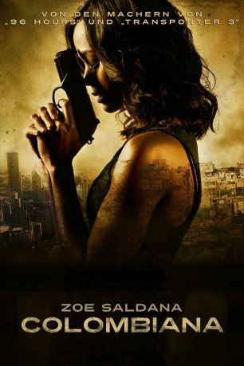
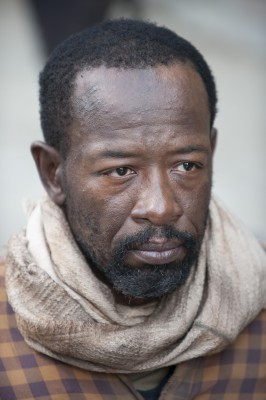
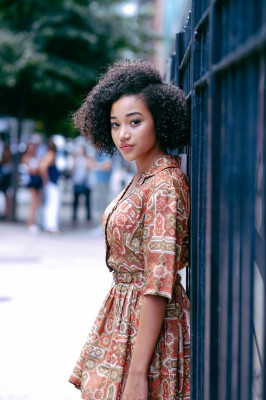
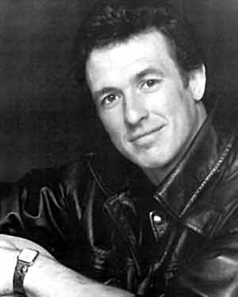
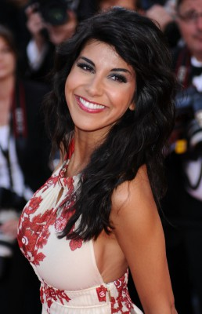
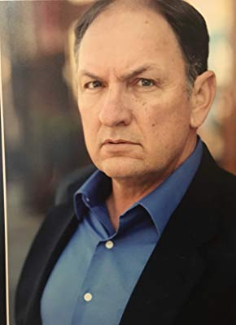

#537 Colombiana
 
 IMDB-Wertung: 6.4 / 10
IMDB-Wertung: 6.4 / 10  Metascore: 45
Metascore: 45 
Cataleya ist erst neun Jahre alt, als sie die Ermordung ihrer Eltern durch den brutalen kolumbianischen Mafiaboss Don Luis mit ansehen muss. Sie selbst entgeht dem Anschlag nur knapp und es gelingt ihr, zu ihrem Onkel nach Chicago zu fliehen. Getrieben von dem Wunsch nach Rache und fest entschlossen, den Mörder ihrer Eltern aufzuspüren, lässt sie sich zur Profi-Killerin ausbilden. Doch Don Luis genießt inzwischen den Schutz der CIA. Bei dem Versuch, ihren Erzfeind aus der Reserve zu locken, gerät auch Cataleya immer mehr ins Fadenkreuz des FBI sondern auch Danny, der von den dunklen Machenschaften seiner Freundin nichts ahnt...
Jahr: 2011
Dauer: 108 Minuten
FSK: 16
Land: Frankreich Studio: UFATonspuren: DTS - ,
Untertitel:
Auflösung: 1080p (1920x816) Größe: 10752 MB
Genre: Action, Krimi, Drama, Thriller
Regisseur: Olivier Megaton
Drehbuch: Luc Besson, Robert Mark Kamen
Soundtrack: Nathaniel Méchaly, Craig Walker
Darsteller:
 Zoe Saldana als Cataleya
Zoe Saldana als Cataleya Jordi Mollà als Marco
Jordi Mollà als Marco-  Lennie James als Ross
-  Amandla Stenberg als Cat - 10
 Michael Vartan als Danny Delanay
Michael Vartan als Danny Delanay Cliff Curtis als Emilio Restrepo
Cliff Curtis als Emilio Restrepo- Beto Benites als Don Luis
 Jesse Borrego als Fabio
Jesse Borrego als Fabio- Cynthia Addai-Robinson als Alicia
- Ofelia Medina als Mama
- Callum Blue als Richard
 Sam Douglas als William Woodgard
Sam Douglas als William Woodgard Graham McTavish als Head Marshall Warren
Graham McTavish als Head Marshall Warren Charles Maquignon als Sergeant Bill Attwood
Charles Maquignon als Sergeant Bill Attwood Billy Slaughter als Ryan
Billy Slaughter als Ryan- Nikea Gamby-Turner als Shari
 John McConnell als Smith
John McConnell als Smith-  Mark De Alessandro als Swat
 Max Martini als Agent Robert Williams
Max Martini als Agent Robert Williams- Tony Dalton als American Embassy 1
 Guillermo Ríos als Emilio's Man
Guillermo Ríos als Emilio's Man- Wes Cannon als Cop
- Doug Rao als Michael Shino
-  Reem Kherici als Nymphette
- Benoit Lavelatte als Thug
- Cedric Burton als SWAT , uncredited
- Nelson Carvajal als Bus Station Patron , uncredited
- Michael Kuster als Bus Station Patron , uncredited
- Jim Nieciecki als Union Station Bus Traveler Flash Back Sequence and Modern day scene , uncredited
- Béatrice Sagne-Kurtis als The Criminal's Dancer , uncredited
- Robert A. Young als Chicago Police Officer , uncredited
- Angel Garnica als Pepe
 Affif Ben Badra als Genarro Rizzo
Affif Ben Badra als Genarro Rizzo- David Clark als Marshall
- Andrea Helene als Principal
- Sébastien Peres als Swat
- Pablo Vinós als Swat
- Julian Sedgwick als American Embassy 2
- Julien Muller als Doyle
- Luis Toscano als Fabio's Man
- Javier Escobar als Marco's Gun Man
- Michael Showers als Cop
- Julie Nicolet als Nymphette
- Stéphane Orsolani als Guy, 6th Floor
- Steve Herson als Ticket Agent
-  Richard Zeringue als Bureaucrat
- Stephan Brodziak als Tech FBI
- William Raymond als FBI Operator
- Alfredo Gonzáles als Old Man, Gardener
- Alejandro Peraza als Head Body Guard
Datei: X:\2011(A-F)\Colombiana (2011, FSK16, 1920x816).mkv seit 05.03.2015
Festplatte: HD 2010(G-Z)-2011(A-F)
 Es gibt insgesamt 86 Filme in der Gruppe '2011(A-F)'
Es gibt insgesamt 86 Filme in der Gruppe '2011(A-F)'